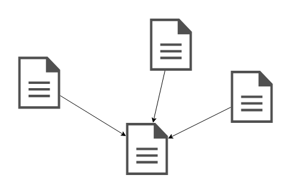

Génétique textuelle
et
technologies numériques
UNIL (Master Histoire du livre et édition des textes), 25.10.2018
Projet « Gustave Roud, Œuvres complètes » - Elena Spadini
Projet « Gustave Roud, Œuvres complètes » - Elena Spadini
- Encodage [XML/TEI]
- Comparaison [algorithmes d'alignement]
- Réseau [OWL/RDF]
TEI (Text Encoding Initiative)

Outils de collation
Parmi les plus utilisés ...
- Juxta Commons
- CollateX (Java | Python)


 2.
2.